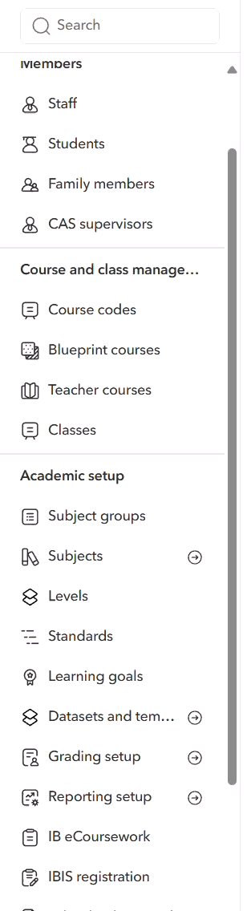
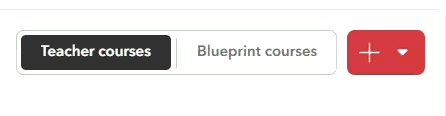
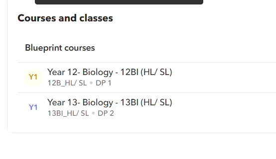
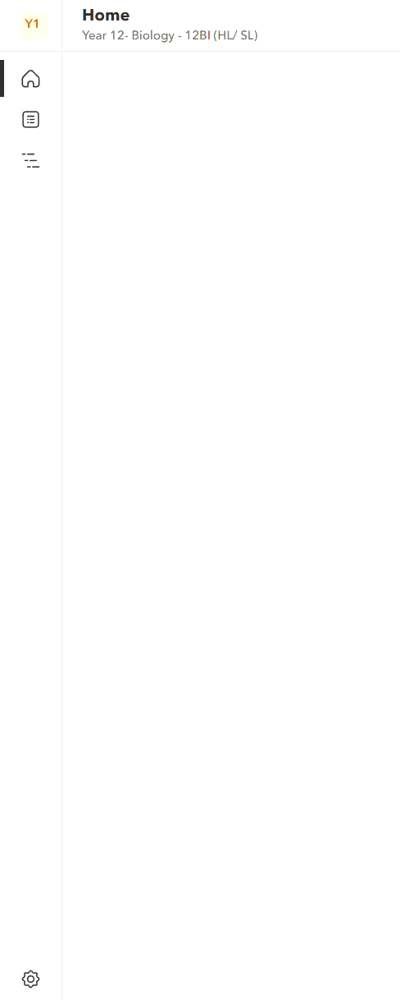
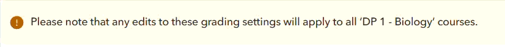
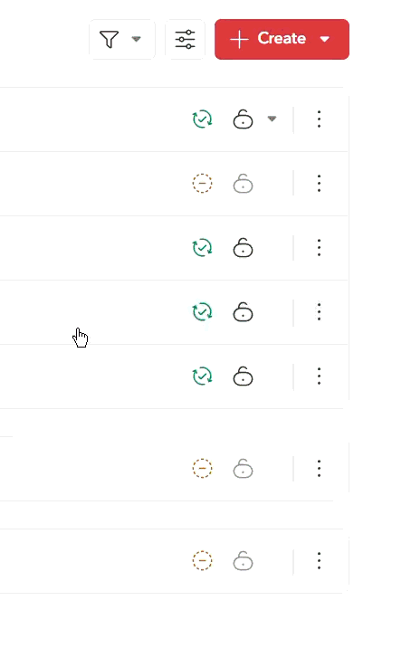

📘 IB Diploma Level Grading Setup
A step-by-step visual guide for Administrators, Heads of Department, and Teachers using Toddle
🔑 Administrator Setup
Select Grading Setup in the DP Admin Panel

Navigate to the Diploma Programme (DP) Admin Panel and select Grading Setup. This is where all grading configurations begin — the settings you define here will be available to Heads of Department and Teachers when they set up their courses and assessments.
Create Required Grading Categories

Create all the grading categories that the school needs. These categories will be available for Heads of Department to assign weights and for Teachers to use when creating assessments.
Once created, these categories are pushed out and available across all DP courses.
📋 Head of Department Setup
Switch to Blueprint Courses

In the course navigation, switch your view to Blueprint Courses. Blueprint courses are the templates that define your subject structure — any changes you make here will cascade to all Teacher Courses linked to this subject.
Choose One of Your Blueprint Courses

Select the Blueprint course for the subject you want to configure. This course acts as the master template — grading setup changes made here will automatically apply to all Teacher Courses under this subject.
Go to Settings and Choose Subject Settings

Within the Blueprint course, navigate to Settings and select Subject Settings. This is where you'll configure grading weights, grade scales, and final grade calculations for your subject.
Note: Changes Apply to All Teacher Courses

Set Papers/Categories and Weights

Configure the Papers or Categories for your subject and assign the weight each contributes towards the final grade. The weights should total 100% and reflect your assessment strategy for the subject.
Example: Internal Assessment (40%) + Paper 1 (30%) + Paper 2 (30%) = 100%
Set IB Grade Translation (Optional)

If you want each category to translate to an IB grade (1–7), enable this option here and set the Grade Boundaries for each category. Grade boundaries define the score thresholds for each IB grade level.
This is useful when you want to see how students are performing relative to IB standards at a category level, before the final grade is calculated.
Set Final Grade as OAG

Scroll down to the Final Grade section and select OAG as your final grade type. The OAG represents the overall performance grade for the subject, although it is calculated, this should be a teacher judgement and can be clicked to change.
Choose Assessment Scoring Method

Choose how individual assessments within a category contribute to the overall category score:
- Average — All assessments are weighted equally. The category score is the simple average of all assessment scores.
- Weighted Average — Assessments have different weights. More important assessments contribute more to the category score.
🎓 Teacher / Head of Department
Create a New Summative Assessment

From either the Blueprint Course Unit or your Teacher Course Unit, create a new Summative Assessment. Summative assessments are the graded tasks that contribute to your students' final grades.
Complete Assessment Details

Fill in all the assessment details:
- Category — Assign the assessment to the appropriate grading category (e.g., Internal Assessment, Paper 1, ATL, etc.)
- Maximum Score — Set the total marks available for this assessment
- IB Grade Scale — If you want the assessment to translate to an IB grade, select IB Grade Scale and enable Grade Automatically. You'll be prompted to enter the Grade Boundaries that map scores to IB grades (1–7)
Check Visibility and Submission Settings

Review and configure who can see the assessment and how students interact with it:
- Student Visibility — Decide whether students can see the assessment, its details, and their grades
- Submission Requirements — Configure what students need to submit (file uploads, text responses, links, or no submission)
- Set visibility to Teachers Only — students don't need to see the assessment
- Turn off submissions — since students won't be uploading work
Enter Scores and Mark as Evaluated

Open the Gradebook for your class and enter the scores for each student.
Until you mark it as evaluated, grades will not be automatically calculated or displayed in the student's overall grade summary.